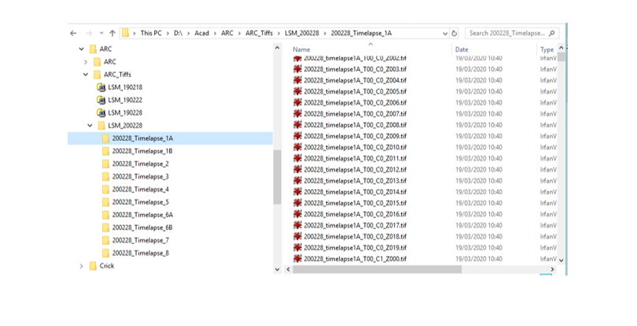
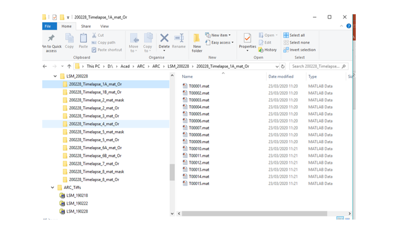

Contents
guideNeutrophilNuclearPlasticity
%clear %close all %cd ('D:\Acad\GitHub\ARC\Figures')
Reading files
The first step is to read the data from tiffs and save in Matlab format. This has several requirements:
1)The name should follow the format *T00_C0_Z000.tif where the T denotes the time frame, C the channel and Z the slice of the stack. For example a file can be named: 200228_timelapse1A_T00_C0_Z000. The first part corresponds to the date, and then an identifier of the actual capture. It is not necessary but highly recommended that the naming is done CAREFULLY so that the data sets can be uniquely identified. All the tif files must be inside the same folder. For example:
Fig0 = imread('D:\Acad\GitHub\ARC\Figures\FoldersTIFFs.png');
imshow(Fig0)
 Dos and don'ts of file names
In general it is a BAD idea to use elements that may lead to uncertainty, e.g. use an uppercase T followed by numbers (besides the time) in the name, for instance Files_T01_Of_date_T20_of_Sample_T12_T00_C0_Z000.tif. Similarly, it is not a good idea to use C and numbers and Z and numbers or use spaces and dots in the middle of the file name.
ReadTIFFS_Save_MATs
To read all the tif files and save in Matlab format, run the file ReadTIFFS_Save_MATS. This will read all the files in the folders and save as Matlab files, one file per time point with all the slices of the z stack in a single file (a 3D matrix). If you have several folders, this can read all in a single call.
The result will be a folder with one file per time point.
Fig1 = imread('D:\Acad\GitHub\ARC\Figures\FoldersMAT.png');
imshow(Fig1)
 measurementExtraction
The main file to process the data is measurementExtraction. This file will take as input arguments:
1 the case to be processed, i.e. the folder which contains the data to analyse 2 cell to analyse (in case there are partitions), use 1 if there is only one cell 3 Channel distribution, this describes where the R,G,B, and differential interference contrast (DIC) / phase constrast (if at all) are located within the z-stack, the order is [g_initial g_final b_initial b_final r_initial r_final dic_initial dic_final] 4 displayImages: 1 to display, 0 not to display 5 selectedTimeFrame, [] to process all 6 calibrationParameters, to obtain results in um/sec instead of just pixels/frame 7 dataOutFolder place where data can be saved, can be left out.
For example this would be one set of parameters to be used:
caseName = 'LSM_170320\170320_Timelapse_5_mat_Or'; counterCells = 1; displayImages = 1; ChannelDistribution = [1 16 17 32 33 48 49 64]; selectedTimeFrame = []; calibrationParameters = [0.1855 27.2000]; % First is um/pix second is frames/sec dataOutFolder = 'D:\Acad\GitHub\ARC\Figures\';
Then, to run the code, you will pass the input parameters like this:
%[cell_metrics, nuclei_metrics] = measurementExtraction(caseName,counterCells,ChannelDistribution,displayImages,selectedTimeFrame,calibrationParameters,dataOutFolder );
The output parameters (besides the video that is automatically generated) consist of two structures, one for the cell, and one for the nucleus. Each will have a series of fields with metrics like area, centroid, speed, etc. There are as many values for each metric as time frames of the data:
cell_metrics
cell_metrics =
1×100 struct array with fields:
Area
Centroid
BoundingBox
MajorAxisLength
MinorAxisLength
Eccentricity
Orientation
Extrema
NewArea
OldArea
Dist
Angle
Extent
numBranches
numEndP
avTortuosity
touchBorder
rows
columns
numSlices
forkness
skelAlignment
skelPerim
ratioSkels
Dist_um_s
Area_um_2
MajAxis_um
MinAxis_um
Min_MajAxis
pathTortuosity
nuclei_metrics
nuclei_metrics =
1×100 struct array with fields:
Area
Centroid
MajorAxisLength
MinorAxisLength
Eccentricity
Orientation
NewArea
OldArea
Dist
Angle
Position
PositionS
numBranches_Thin
numEndP_Thin
numBranches_Skel
numEndP_Skel
forkness
skelPerim
Dist_um_s
Area_um_2
MajAxis_um
MinAxis_um
Min_MajAxis
PositionR
angleR